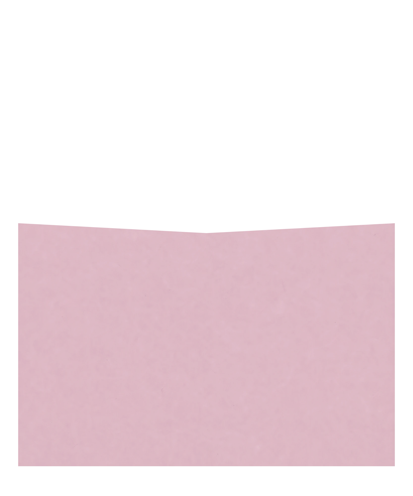
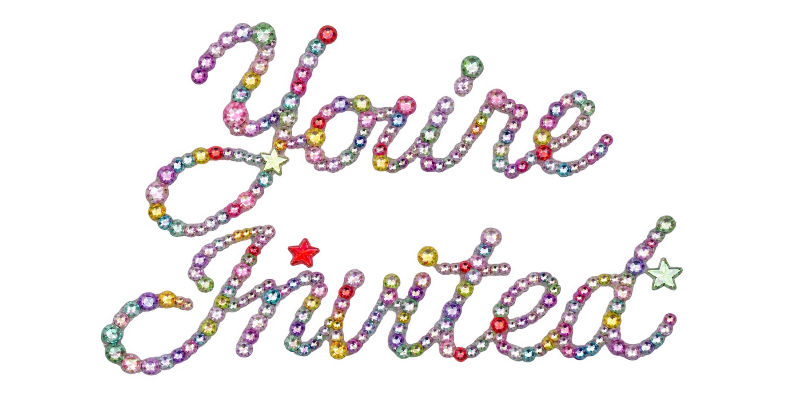
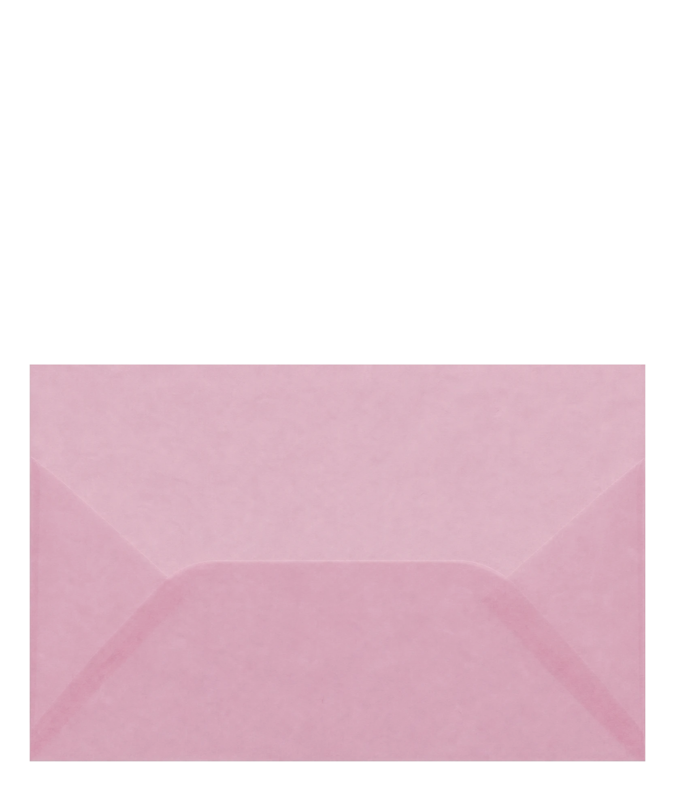
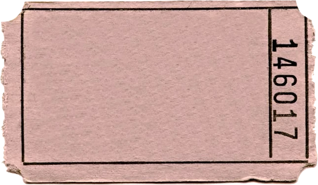
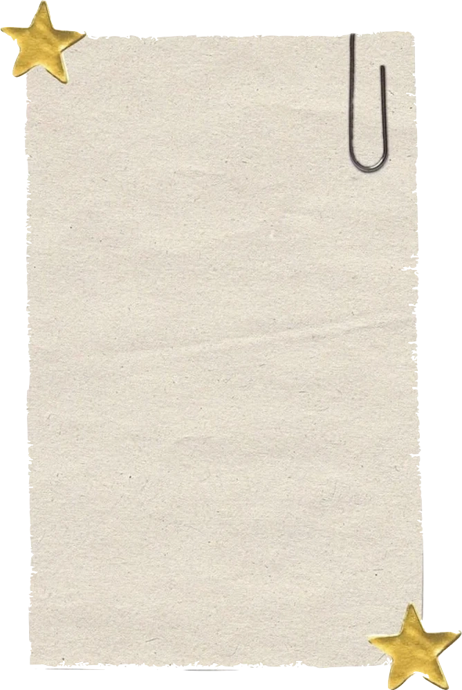
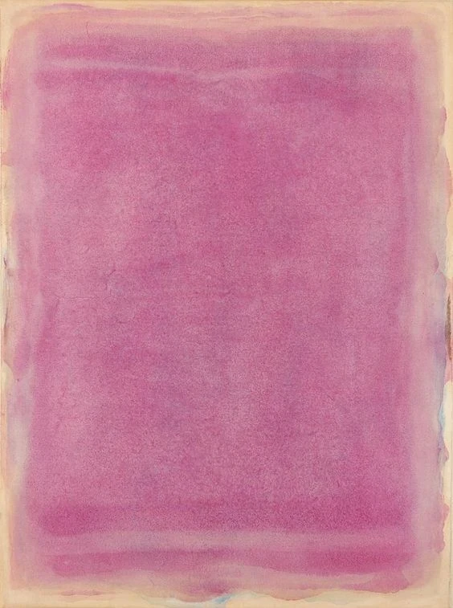
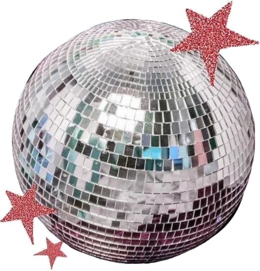
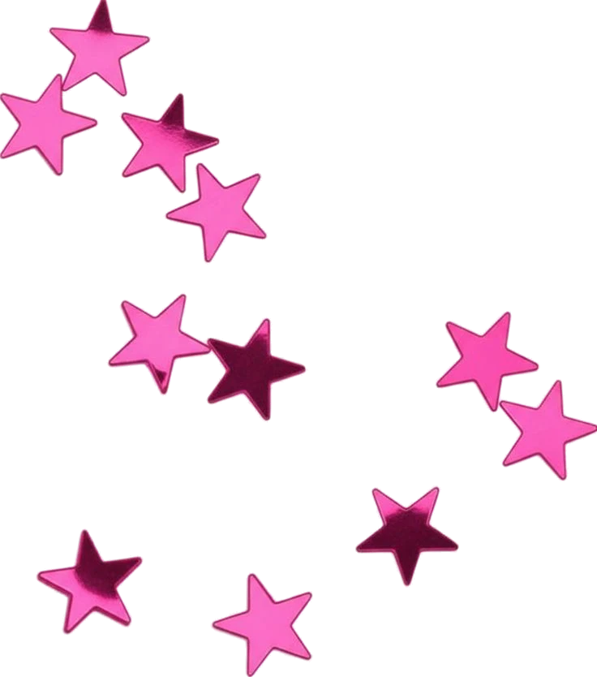
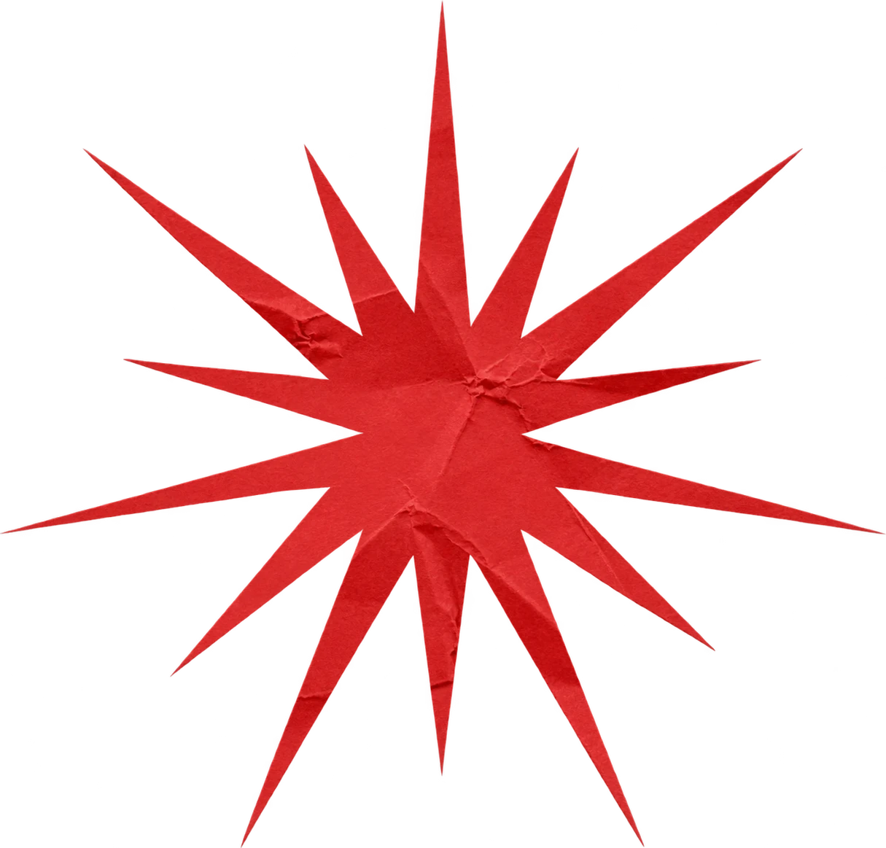
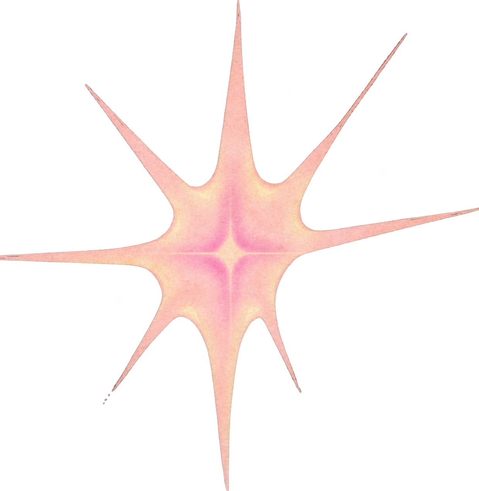

You're Invited
12.12
They say all good things come in threes. Let's put it to the test.
You are hereby cordially invited to Going Analog, Birthday Edition.
Prepare to put your phones away, leave everything on the dance floor, and celebrate not one, not two, but THREE birthdays.

party details
Saturday, December 12
8:30pm to 11:30pm
Index Greenpoint
cover details
INSTEAD of gifts this year, we're asking guests to donate $10-20+. All proceeds go to causes we care about.
Your venmo is your entry.

Venmo: @Judyli1357
Zelle: 781-491-5618
Put your foundation of choice in your byline.
click to learn more!

Stepping into next year committed to giving back. That's hot.

Dress code:
Disco formal
Show up as your most authentic and maximalist self. Think bright colors, funky patterns, sparkles, something your mom wouldn't approve of...
Most importantly, wear something you can have fun in and dance in. And if you need more inspo, refer here.


meet the birthday girls


Judy Li, '03


Bianca Pagano, '02


Victoria Briggiler, '03
what to expect



no phones
with beats by our friend Ben
beer, wine, and cake
All of our favorite people
A night of celebration, joy, and birthday wishes :)